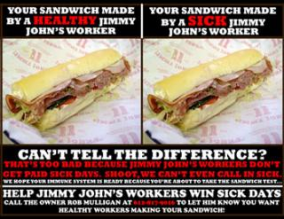
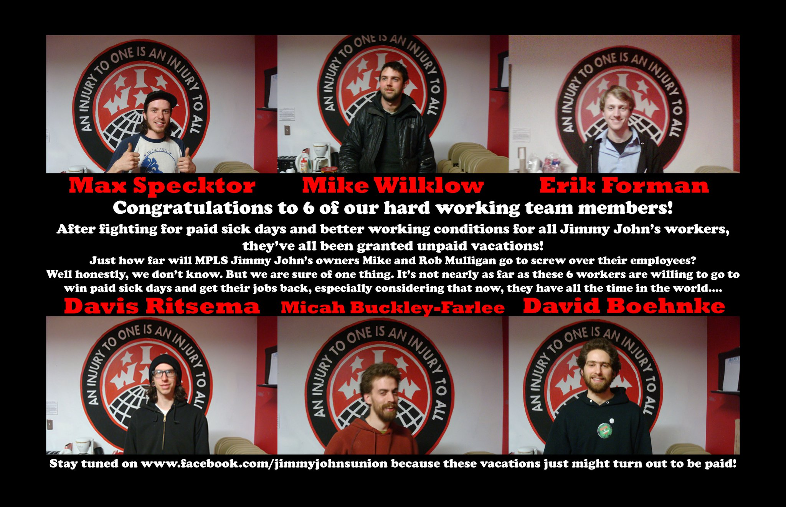

All workers except agricultural and fishery workers, engaged in producing and processing food, beverages, and tobacco products.
Submitted on Tue, 04/24/2012 - 8:25pm
MINNEAPOLIS- Picket lines will popped up around Jimmy John's at noon today as sandwich workers and supporters from Occupy Minneapolis and local labor unions sought to persuade franchise owners Mike and Rob Mulligan to comply with a judge's order to reinstate six workers illegally fired for blowing the whistle on company policies which expose customers to sandwiches made by sick workers. Although an NLRB judge ruled on Friday that the workers must be offered reinstatement within 14 days, federal labor law allows employers to illegally fire workers and then drag out appeals for years with minimal penalties.
"The dysfunction of US labor law means that crime pays for bosses in America. We are calling on Mike and Rob Mulligan to do the right thing and abide by the court order, rather than delay justice by pouring more money into a losing legal battle," said Max Specktor, one of the fired workers.
According to the judge's ruling, Jimmy John's workers can be disciplined if they call in sick without finding a substitute. A union survey revealed that this policy, in conjunction with minimum-wage workers' inability to afford to take a day off, result in an average of two workers making sandwiches while sick every day at the Minneapolis franchise of the chain. Minnesota Department of Health reports document three outbreaks of foodborne illness in the past five years at the franchise, due in part to sick workers.
Workers at Jimmy John's then began campaigning for the right to call in sick and paid sick days in January 2011. Despite the clear risk to public health of workers making sandwiches while ill, franchise owners Mike and Rob Mulligan stonewalled employee requests for sick day policy reform for more than two months, prompting union supporters to take their message to the public by posting 3000 copies of a poster explaining that workers are forced to make sandwiches while sick. Mike and Rob Mulligan lashed out in retaliation, firing six workers and disciplining others. On the witness stand, Mike Mulligan admitted under oath that he had fired the six workers because he perceived them as the "leaders and developers" of a unionization effort. Mulligan's credibility was further eroded when he testified to intentionally lying about the franchise's food safety record to the press.
Submitted on Mon, 04/23/2012 - 8:06pm
MINNEAPOLIS- A federal judge has ordered Jimmy John's to reinstate six workers fired by franchise owners Mike and Rob Mulligan over a year ago for blowing the whistle on company policies that expose customers to sandwiches made by sick workers. Jimmy John's workers can be written up or fired if they take a day off without finding a substitute when they are sick. A union survey revealed that this policy, in conjunction with minimum-wage workers' inability to afford to take a day off, result in an average of two workers making sandwiches while sick every day at the Minneapolis franchise of the chain. The judge's ruling requires that Jimmy John's reinstate the six workers with back pay within 14 days, but the employer could manipulate the appeal process to stall resolution of the case for several more years.
While the workers hail the judge's ruling as a victory for whistleblower rights, they point out that justice delayed is justice denied. “It has already been over a year since we were illegally fired for telling the truth. For all the hard work and dedication of the NLRB's civil servants, employers like Jimmy John's prefer to break the law and drag cases through the courts for years rather than let workers exercise their right to win fair pay, sick days, and respect through union organization,” said Erik Forman, one of the fired workers, “The dysfunctional US labor law system gives Mike and Rob Mulligan and their cronies in the 1% carte blanche to trample on workers rights. Jimmy John's workers, and the rest of the 99%, will only be able to win a better life by taking our fight from the courtroom back to the shopfloors and the streets."
The story of the unionization effort at Jimmy John's reads like a cautionary tale about the inefficacy of labor law in the United States. A majority of Jimmy John's workers demanded union recognition in September 2010, primarily seeking a pay increase above minimum wage. In response, the company spent over $85,000 on a vicious anti-union campaign with the help of outside union-busting consultants. In spite of rampant illegal intimidation, the workers came within a hairs-breadth of victory in an 85-87 vote that the NLRB later threw out due to over 30 employer violations of federal labor law in the election period.
Submitted on Sun, 04/01/2012 - 7:50pm
By Daniel Gross - March 29, 2012
I write with great emotion, gratitude, and hope for the future. Nothing has reached as deep into the soul of the Brandworkers community as the crushing death of Juan Baten in a Brooklyn tortilla factory at the beginning of last year. And nothing has fortified our determination for change as much as the courageous efforts of Juan's widow, Rosario Ramirez, to achieve justice for Juan and their daughter Daisy Stephanie.
Juan lost his life because of his employer's reckless disregard for worker health & safety, a problem of endemic proportions in New York City's food processing factories and distribution warehouses. OSHA, the federal workplace safety agency, concluded that Juan's death would have been prevented had the employer placed a legally required and simple machine guard on the mixer that brutally ended Juan's life. After Juan's death, the factory owner Erasmo Ponce and fellow managers threatened workers if they cooperated with investigators, lied about Juan's death, and even disrespected Rosario at Juan's funeral.
Who would have challenged the employer's false narrative in the media and to government authorities if not for you, the Brandworkers community?
Who would have raised thousands of dollars for Rosario and Daisy if not for you, the Brandworkers community?
Who would have persistently advocated for Erasmo Ponce's arrest to the Office of the Attorney General if not for you, the Brandworkers community?
After this lengthy struggle and with your accompaniment, on Tuesday Rosario finally got some of the solace she so profoundly deserves. Authorities arrested sweatshop owner Erasmo Ponce on 26 felony counts and 23 misdemeanor counts, including falsifying business documents, wage-related violations, and misconduct in connection with the unemployment and workers compensation systems.
Submitted on Sun, 03/11/2012 - 3:11pm
 By Daniel Gross - March 9, 2012
By Daniel Gross - March 9, 2012
Members of Focus on the Food Chain at one of New York City's largest industrial bakeries launched a campaign on Wednesday to win respect at work in the face of an aggressive attempt by the factory's new private equity owners to degrade their jobs. Drivers at Queens-based Tom Cat Bakery, a leading supplier of artisanal breads to many of the New York metro area's finest restaurants and gourmet food retailers, are forced to work under a highly abusive manager and are being threatened with severe health care cutbacks.
The Tom Cat workers, mostly Latin American immigrants, gathered yesterday in Long Island City with worker and student allies representing a variety of groups including the Occupy Wall Street Immigrant Worker Justice Working Group, Food Chain Workers Alliance, Jornaleros Unidos de Woodside, the Laundry Workers Center, the Restaurant Opportunities Center of New York, and Domestic Workers United.
Together, workers and supporters marched to the plant where the drivers read and delivered a Declaration of Dignity, outlining workers' expectations of management in the area of respectful treatment, affordable family health care, and equal treatment of all workers. The action was an incredibly inspiring start to the Tom Cat workers' march to justice and represents the latest effort in the growing movement to transform New York City's food processing factories and distribution warehouses.
New York City's food processing and distribution sector supports the livelihoods of 35,000 workers and their families, yet the sector is increasingly characterized by a business model that relies on low quality jobs and mistreatment of a largely immigrant workforce. Focus on the Food Chain is a member-led campaign of workers in the sector organizing to promote good jobs and a sustainable local food system. The Focus campaign is a joint project of Brandworkers and the NYC Industrial Workers of the World labor union.
Submitted on Mon, 02/13/2012 - 1:15am
By Daniel Gross - Counterpunch, January 24, 2012
A year ago today, Juan Baten, a 22-year-old Guatemalan, was crushed to death while working in a Brooklyn tortilla factory. Mr. Baten was one of 35,000 workers in a little-known, but indispensable part of New York’s food system: a sprawling industrial sector of food processing factories and distribution warehouses that supply the grocery stores and restaurants where New Yorkers purchase their food. A year later, justice has still not been done in Mr. Baten’s case and New York’s food supply chain continues to rely on the systematic exploitation of recent immigrant workers, many from Latin America and China.
Mr. Baten started working at Tortilleria Chinantla when he was just sixteen years old. He was working to support his young family – his partner Rosario and their baby daughter Daisy Stephanie – and to send money back home to Guatemala where his father had recently died. Mr. Baten worked grueling, long shifts through the night for low pay, six days a week. On one such night a year ago, just hours after he called to check on his daughter, Mr. Baten was caught in the mixing machine in which he was brutally killed.
After conducting an investigation of the death, OSHA, the federal workplace safety agency, concluded that had the employer obeyed its legal duty and placed a required guard on the mixing machine, Juan Baten would be alive with his family today. Instead, because of what OSHA called Chinantla’s “disregard for the law’s requirements” or “indifference to worker safety and health,” Daisy Stephanie is growing up without her father and Rosario lives with a deep wound in her heart.